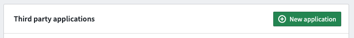
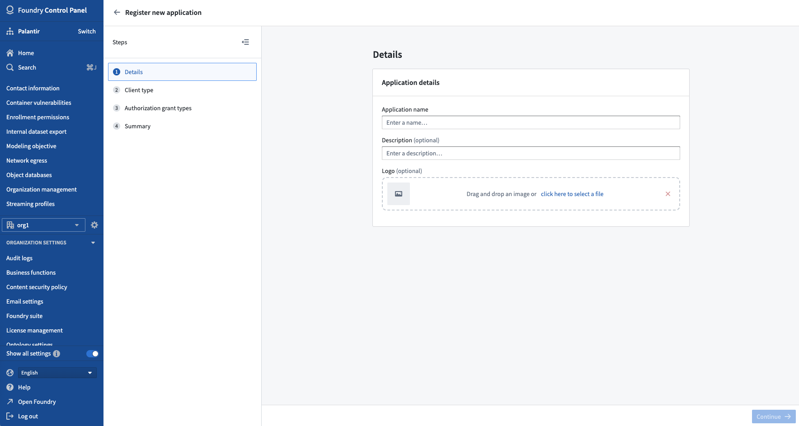
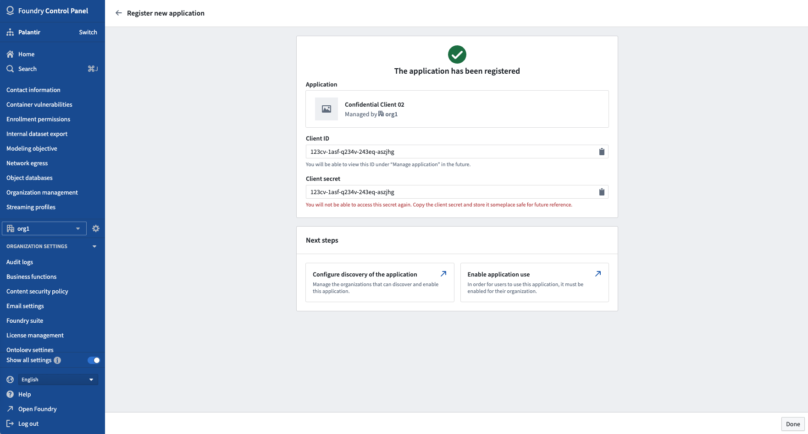

:::callout{theme="warning"} Users should use Developer Console to register a new application configuration. If you need the equivalent of a legacy standalone OAuth client, follow the steps to create an unrestricted application. The Control Panel flow described on this page only applies if Developer Console has not been enabled for the user. :::
Before a third-party application can be connected to Foundry, it must be registered on the Foundry platform. The initial registration process creates a name, a client ID, and a client secret for the third-party application; see the OAuth.com docs â for more information on client IDs and client secrets, which are used in the authorization workflow. Then, a third-party application will need to be configured with a redirect URL for the authorization process, as well as a name, description, and icon which are used for the in-platform representation of the third-party application.


code_verifier and code_challenge parameters is required. Client credentials grant is not supported. :::callout{theme="warning" title="Warning"} Native or single-page applications, such as mobile apps, are distributed to users for deployment. Thus, the application binaries are available and can be disassembled to extract a client secret. The client secret could then be used to impersonate an authorized user in an attack. Proof Key for Code Exchange (PKCE) â is used to prevent such attacks. :::
If you choose to enable the Client credentials grant (this will only be available to confidential clients), a service user will be created for the application. The service user can be permissioned to access Foundry resources for requests on behalf of the application.
In the Summary step, an overview of all the information provided will be shown along with any missing pieces that still need to be given. When required fields are completed, you can click Register application on the bottom right of the screen.
Upon submission, you will be presented with the newly created client's ID and secret, if applicable.

:::callout{theme="warning" title="Warning"} If using a confidential client, you must copy the client secret at this point. The secret will not be available again after leaving this page. If you lose access to the client secret, you will need to rotate the secret. :::
Registration alone does not make the application usable. Before users can authorize it, the application must be enabled for an Organization; see Enabling third-party applications. Project access and Marking restrictions are also set there rather than during registration.